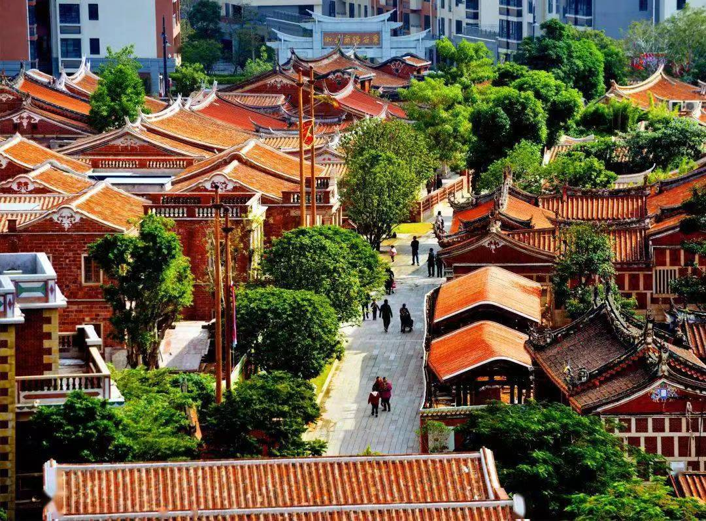
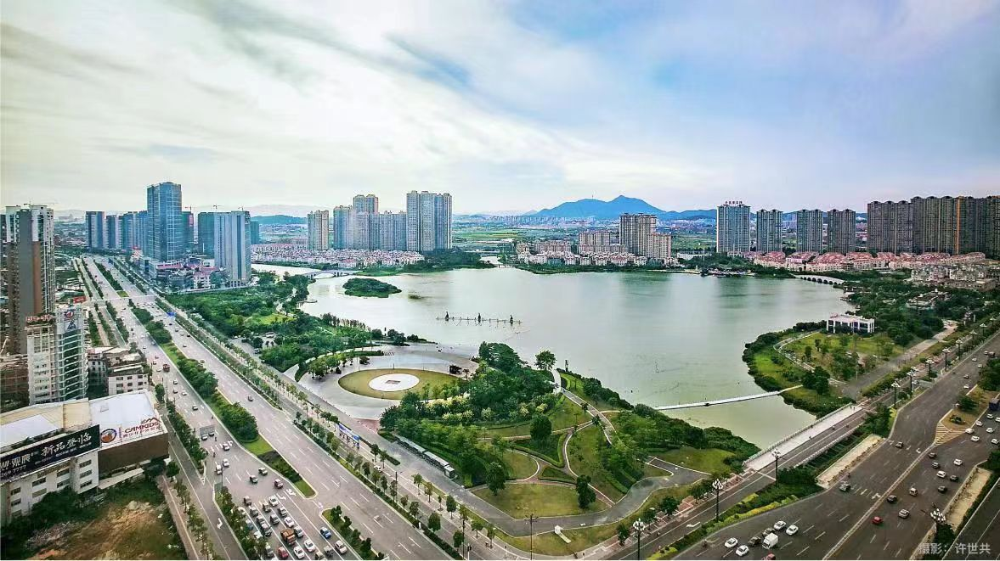

我的家乡


福建省晋江市，位于福建省东南沿海，泉州市东南部，是一座具有1300多年历史的城市。该市三面环海，与台湾隔海相望，素有“泉南佛国”、“海滨邹鲁”的美誉。晋江市下辖6个街道、13个镇，常住人口超过208万（截至2023年），是一个人口密集、经济繁荣的县级市。
在经济方面，晋江市是全国著名的侨乡，旅外华侨、华人和港澳台同胞众多，经济开放度高。同时，晋江市也是全国科技进步示范区之一，科技综合实力进入全国百强行列。2023年，晋江市全年实现地区生产总值3363.50亿元，比上年增长6.5%，显示出强劲的经济增长势头。
此外，晋江市还是一个文化底蕴深厚的城市，拥有安平桥、草庵、海底古森林遗址等丰富的旅游资源，吸引了大量游客前来观光旅游。